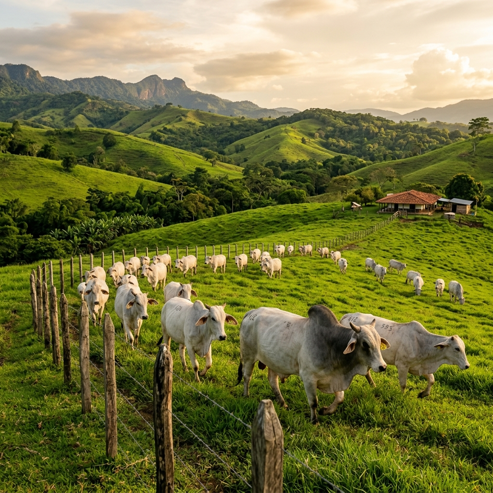

Ruta cocreación 1 · 2 noches / 3 días
Vive la ganadería, no la mires desde lejos
Experiencia inmersiva en tres fincas ganaderas del Magdalena Medio: Las Camelias, San Juan de Bedout y Hacienda La Tagua. Ordeño, cabalgatas, gastronomía de campo y cierre bufalino en Colbúfala.
Público objetivo: familias, estudiantes especializados, vocación ganadera, turistas nacionales y extranjeros.
Punto de encuentro: La Alpina Centro Turístico o restaurante El Portal.
Transporte interno: minivan o camioneta 4x4.
Aforo máximo: 10 a 20 personas.
Actores participantes: Finca Las Camelias (Liller Inversiones), Hacienda San Juan de Bedout, Hacienda La Tagua, Casa del Río Hotel / Apartahotel San Diego, Colbúfala y restaurantes locales (Casa Vieja, El Portal, La Martina).
Itinerario día a día
Ordeño
Desayuno tradicional
Paseo a caballo
Almuerzo ganadero
Retorno a Puerto Berrío
Compras para llevar
Desayuno
Caracterización de la finca
Recorrido por instalaciones
Almuerzo típico
Visita a establos
Salida de campo con vaqueros
Refrigerio
Regreso a Puerto Berrío
Instalación en hotel
Cena
Salida hacia la finca
Llegada y ordeño
Desayuno
Introducción de la empresa
Salida a caballo · manejo de campo
Refrigerio e hidratación
Desplazamiento a caballo al río
Almuerzo fiambre de vaquero
Desplazamiento a la casa
Salida a Puerto Berrío
Tour por Puerto Berrío y cierre